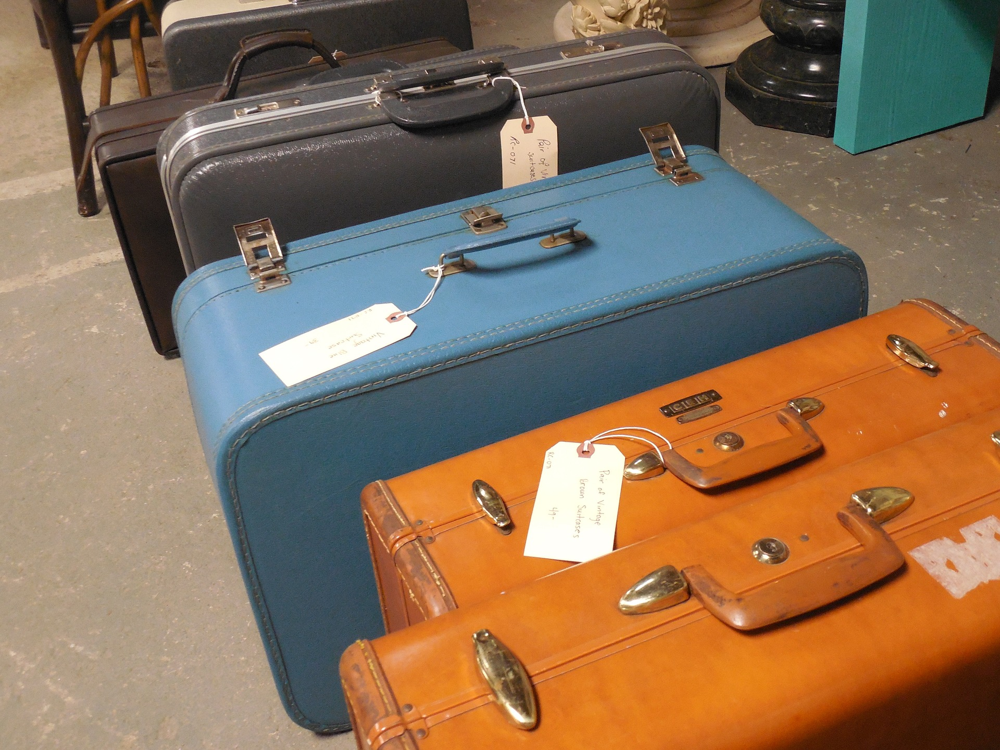
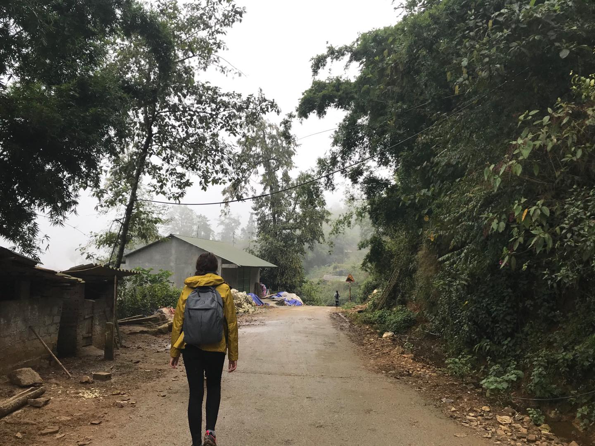
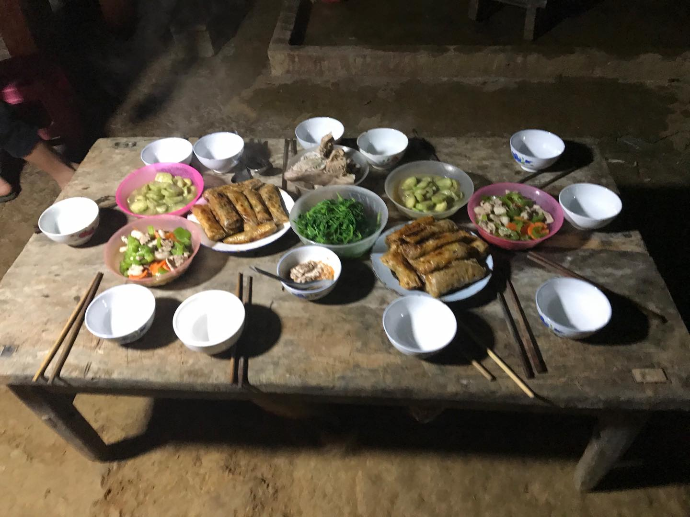
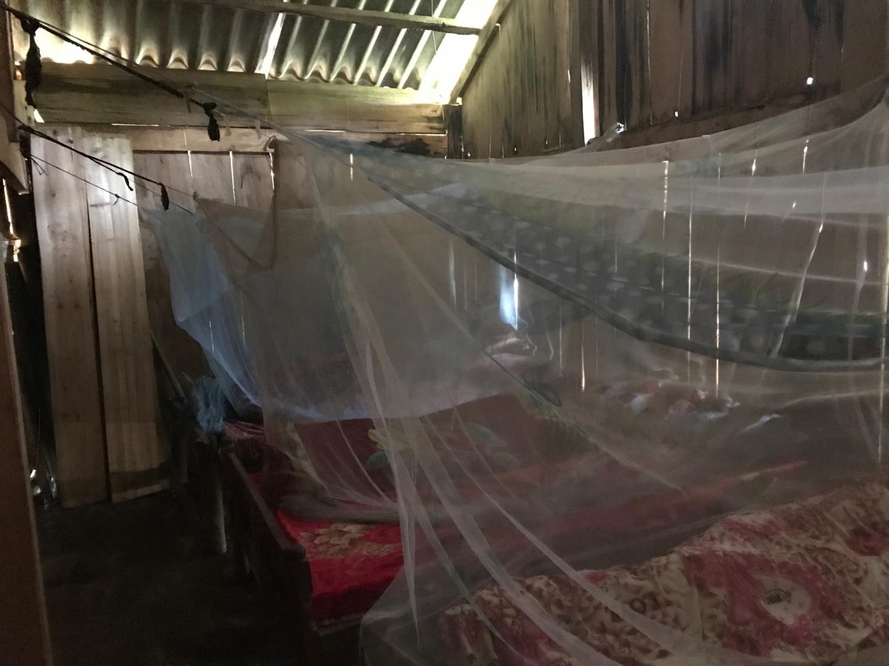
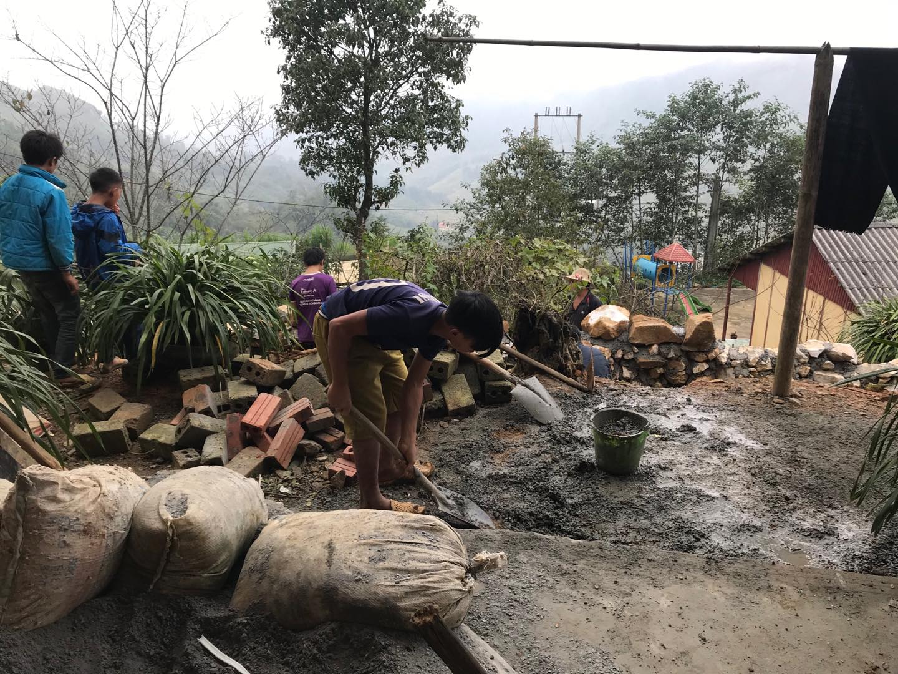
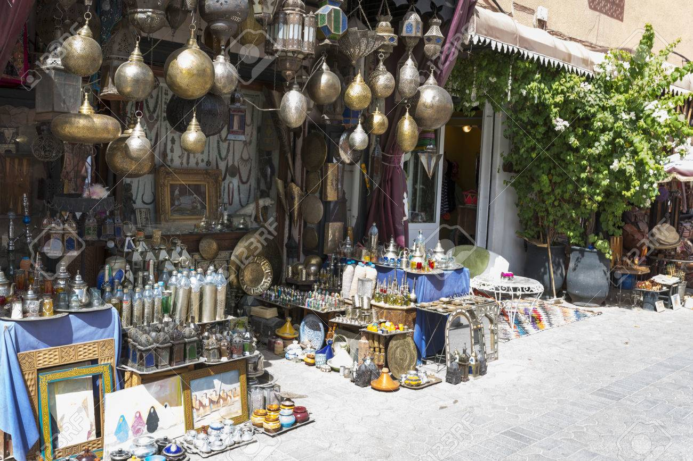
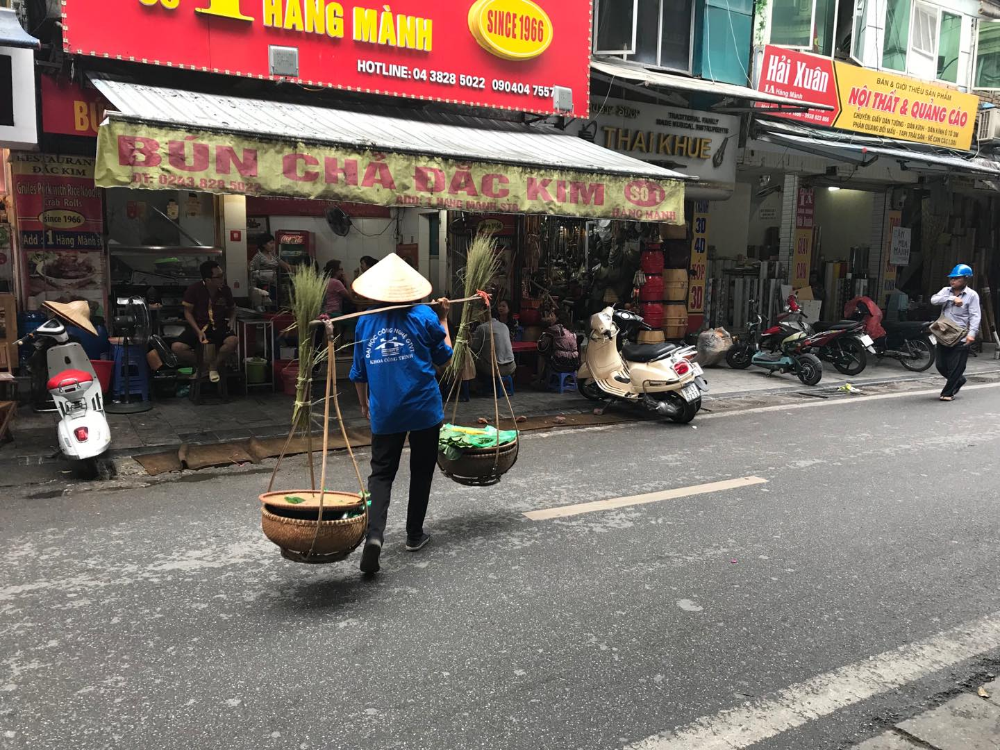

Make out planet great again!!!
You can also become an Eco-conscious traveller, here are some tips to make easier for you.
By Weronika Kiljańczyk
PACKING
Pack environmentally conscious products.
From shampoos, conditioners, and body washes, to our sunscreens, we leave pieces of ourselves everywhere we travel. Choose the products that use involves consciously purchasing brands that privilege the use of non-toxic substances.
Thankfully, there is now an abundance of companies who are plugged into the environment and producing quality eco-friendly hair and skin products, for example Lush, Love Beauty and Planet.
Minimize your plastic use, bring your own refillable water bottle with you on your travels This is a fantastic way to have an impact at a low cost to you.
Also bring reusable Tupperware if you’re going to be traveling for an extended period of time. It’s perfect for your street food endeavours.

TRANSPORT

The best advice for eco-friendly way of commune is to avoid flying. But if you fly:
- Fly more carbon efficiently: Flying First Class or Business Class means more space per seat, which equates to more carbon per passenger.
- Fly less mileage: Consider shorter haul rather than long one. There’s a greater impact of carbon at higher altitudes reached by long-haul flights.
- Fly direct, without stop-overs - aeroplanes use a lot of fuel taking off and landing, representing a higher proportion of fuel on a short-haul flight.
Better way of transport is taking train. If you take the train from London to Paris rather than fly you’ll cut carbon emissions by 90%.
But don’t forget that if it is possible for you the most eco-conscious way is taking public transport or even walking/cycling.
CUISINE
Buying local organic food not only supports local staff and economy and your health, but also means:
- Less imports: meaning less food miles.
- Less processed: meaning less energy consumption.
- A plant-based diet: means less carbon emissions from meat farming and its linked deforestation.
If you want to know more about this and find some examples of restaurants click here.

ACCOMODATION

Book eco-conscious accommodations!
You can choose place like a tree house lodge, seaside cottages, or local’s home. On the Global Sustainable Tourism Council’s website, you can find diverse certified sustainable destinations and accommodations. But if you choose a regular hotel or hostel, make eco-conscious choices - for example, you don’t need a new towel for each and every shower you take etc
ACTIVITIES
Select cruelty free, environmentally conscious activities and activity providers. Visiting wildlife abroad is absolute wonderful. Seeing animals in their natural element brings your childhood dreams come true. But ensuring that the animals are treated with respect and that their welfare is your responsibility. Some activities do not privilege animal welfare, and even drug the animals so that they remain docile as your interact.
There are many rehabilitative, educational and animal welfare oriented experiences to take part in while you travel, and choosing centres that privilege the animals well-being.

SOUVENIRS

Don’t buy cheap made-in-China souvenirs. Opt for real things, buy products from local sellers especially home-made.
This also helps preserve their cultural heritage, but make sure, what is product made from, avoid buying anything made from endangered species or hard woods.
CULTURE
Avoid cultural ignorance, try to understand other people culture and respect them. Remember that all your actions affect other people and environment.
Popular tourist sites are beginning to feel the strain of tourism. The United Nations has even created the List of World Heritage in Danger to spur preservation and ensure that these sites are taken care of as tourism continues to grow.

Eco-conscious travel is the way to go - so let’s get conscious and get traveling!